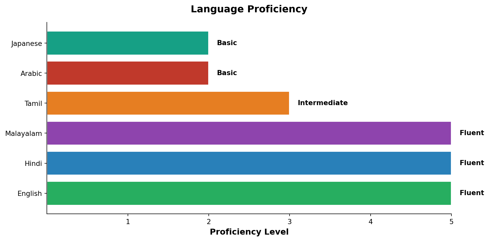

| Period | Institution | Degree | Location | GPA / Note |
|---|---|---|---|---|
| May 2026 (Expected) | Boston University | M.S. Applied Business Analytics | Boston, MA | 3.5 (in progress) |
| May 2024 | SRM University | B.Tech — Computer Science (Big Data Analytics) | Chennai, India | Capstone: Text Steganography Detection System |
About Me
Professional Snapshot
I’m Mishal Aboobackar, currently pursuing my Master of Science in Applied Business Analytics at Boston University (GPA: 3.5, May 2026). I hold a B.Tech in Computer Science — Big Data Analytics from SRM University and bring professional experience as a Business Analyst spanning 23 countries across Asia, the Middle East & Africa.
Eligible for STEM OPT (3-year work authorisation). Available from June 2026.
Education
Professional Experience
| Period | Role | Company | Location |
|---|---|---|---|
| Sep 2023 – Jan 2025 | Business Analyst | G-TEC Education | Singapore (23 countries) |
| Jan 2025 – May 2025 | Inventory Management | Boston University Dining Services | Boston, MA |
| Jul 2023 – Aug 2023 | HR & Operations Intern | USDC Global | Bangalore, India |
Core Skills
- Programming & Libraries: Python (Pandas, NumPy, Scikit-learn, PySpark, Matplotlib), R, SQL
- Machine Learning & AI: Regression, Classification (Decision Tree, Random Forest, k-NN, CNN, DistilBERT), K-Means, NLP (VADER, RoBERTa, GloVe, SpaCy), A/B Testing
- BI & Visualisation: Power BI, Tableau, MS Excel (PivotTables, Power Query, Advanced Formulas)
- Data Engineering & Cloud: Apache Spark, PySpark, ETL, Git, GitHub, AWS (EC2, Cloud Foundations), Oracle, Cloudera
- Business & ERP Tools: GEMS ERP, Zoho, RECIBO, Google Workspace, Microsoft Office Suite, Visio, Lucidchart
Languages
Scale: 1 = Basic, 3 = Intermediate, 5 = Fluent
Achievements & Awards
- 1st Place — ABA@BU Hackathon, Fall 2025, Competition A: Dataset Analysis & Modelling (out of 40+ teams, Boston University Applied Business Analytics Programme)
Volunteer & International Engagement
- International representation — Sharjah International Book Fair 2024, EduTEX Oman, and Austrade Festival of Australia: engaged educators, government officials, and institutional partners across three continents on behalf of G-TEC Education.
- News18 Anti-Drug Campaign — Delivered a live public awareness address on substance abuse to a national television audience, reaching thousands of viewers across India.